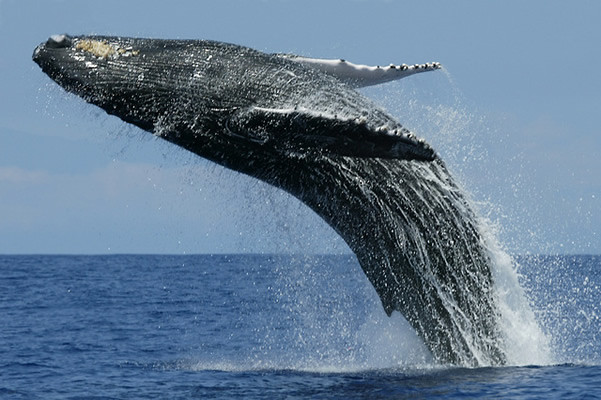
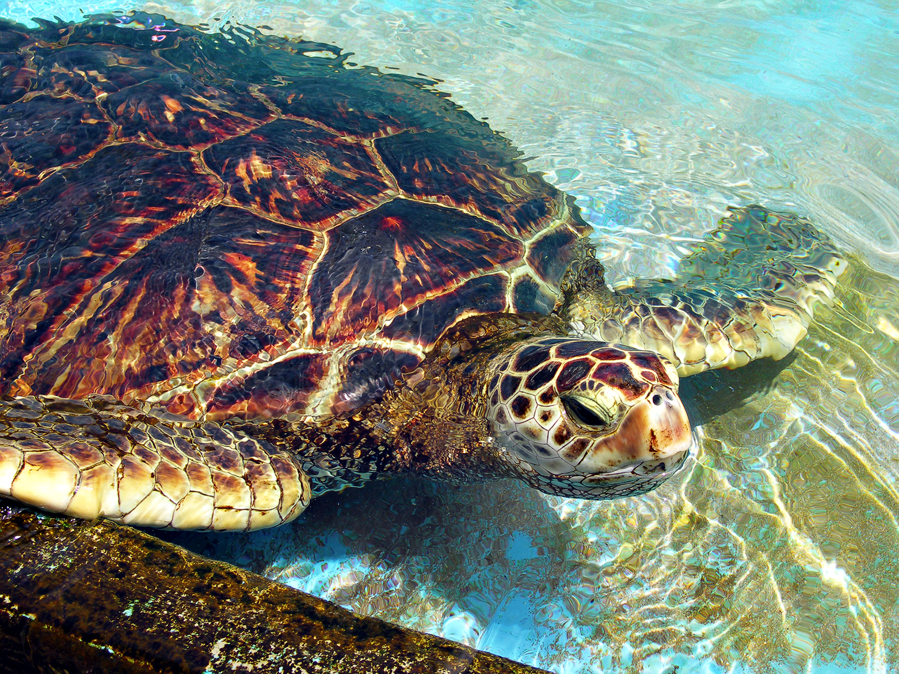
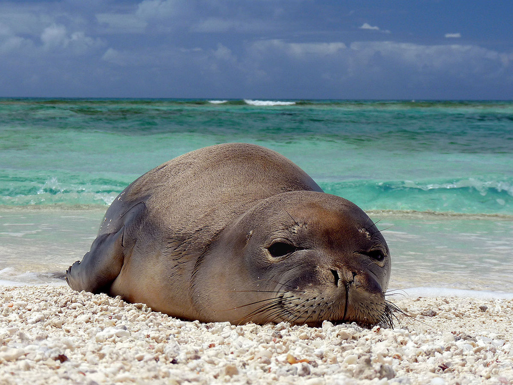

The blue whale is the largest animal that has ever lived on Earth. Their main food source is krill. They eat around four tons of krill everyday. They also have one of the higgest animal lifespans, living from around 80 to 90 years. Whales became endangered in the 1900s due to agressive hunting. In 1966, it was made illegal to hunt them. However, their population is still dangerously low. For more information go to this link.
 ">The Green Sea Turtle can live upward of 80 years and can weigh up to 700 pounds. They are found in tropical costal areas and are herbivores, so they mainly eat grass and algae. In 1982, the Green Sea Turtles were listed as endangered. The threat is from harvesting their eggs and killing them for leather. For more information look at this link.
Hawaiian Monk Seals are found in the northwest islands of Hawaii. Their lifespans are between 25 to 30 years and weigh between 500 to 610 pounds. Humans are moving into the coast land the seals call home. They can also be the victims of fishing. They are not targeted, but are sometimes accidentally caught in the nets. For more information go to this link.
